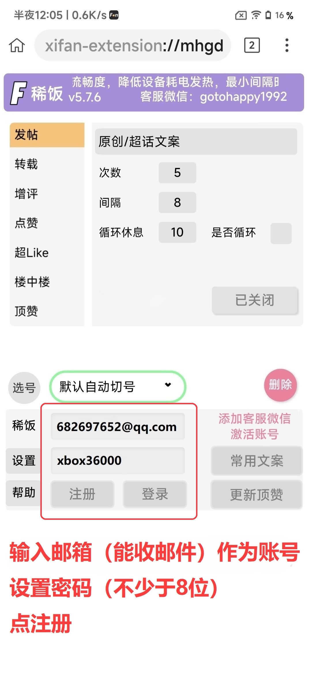
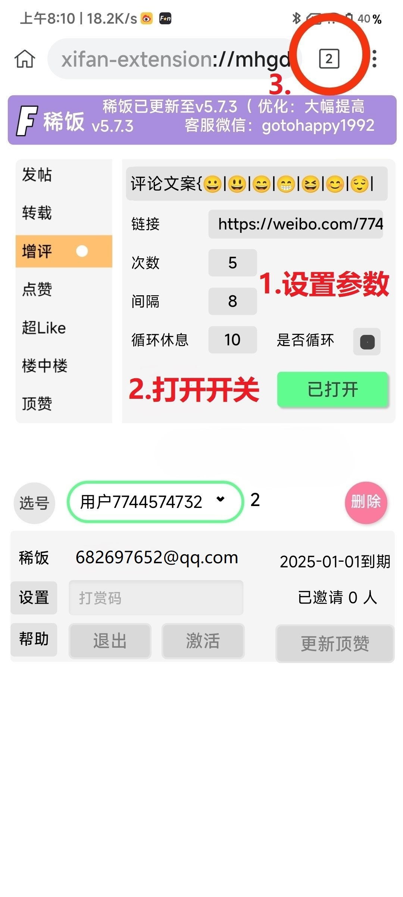
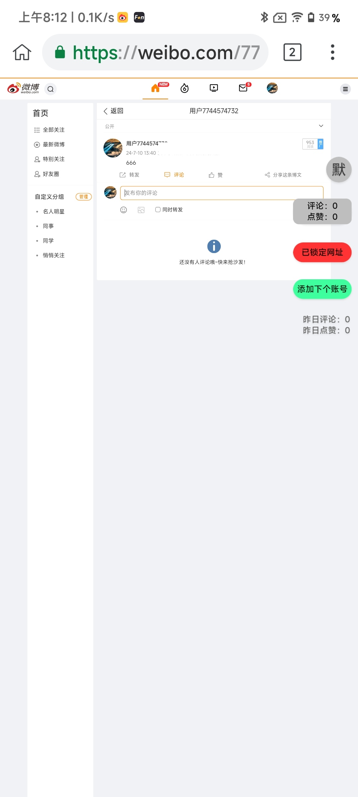

产品说明：
1. 官方网站：
https://akang1937.github.io/Xifan
https://xifan.netlify.app（备用官网）
2. 特色功能：
发原创/超话
转载
增评
点赞（内、外）
超Like（可捞指定分区、抢首评成功率高）
超话签到
楼中楼增评
楼中楼点赞
多开账号
自动切号
全天候循环操作
文案重复自动纠错
操作频繁智能处理
云端备份/恢复账号
可随机文案
可设置常用文案
3. 可用设备： 安卓手机，windows电脑。
4. 运行环境： 前台运行，后台运行，锁屏运行都可以。
（手机端需要将稀饭App设置为“允许后台运行”）
图文教程
注册：

添加账号：
运行：


使用说明
1. 绑定设备：
每个（稀饭）账号都是绑定设备的。在设备上登录账号后，一旦激活就会绑定该设备。
2. 换绑设备：
在新设备上登录（稀饭）账号，重新激活，即可换绑到新设备。// 年赏用户如需换绑设备，可联系客服免费获取打赏码重新激活。
3. 账号恢复：
登录的账号会自动备份到云端，如果重新安装、或换绑设备，账号会自动恢复。
4. 自动切号：
为用户账号安全起见，默认每次自动切5个号后，会自动停止操作，关闭开关。【如果勾选循环功能，并设置循环休息时间后，将不再自动停止】
5. 文案类型：
(1) 固定文案+随机表情/递增数字：设置文案后，点一键添加随机表情/一键添加数字变量。
(2) 随机文案：用换行分隔每一组文案。比如：
好好学习！
天天向上！
步步登高！
6. 选择账号：
(1) 不选择账号：所有账号都会执行任务。
(2) 选择账号： 只有选中的账号执行任务。点击选号——选择账号——点击选定。
7. 发超话：
在【发帖】设置中。设置超话名称，则发超话。不设置超话名称，则发原创。
8. 超Like：
在【超Like】设置中，设置分区名称。例如：帖子。
9. 超话签到：
在【特色功能】中设置超话主页链接，打开开关即可。
10. 楼中楼增评：
1.用一个挂在稀饭中的wb号，给要盖楼的评论回复一条评论。（可以在wb的官方app中完成这一步）
2.在稀饭中，切换到这个wb账号。
3.在【楼中楼】设置中，勾选是否新任务，打开开关即可。
11. 全天候循环：
勾选是否循环，设置循环休息时间即可。
12. 文案重复自动纠错：
如果因为偶尔的操作失败，导致文案重复无法继续操作时，会自动纠正文案，确保操作不会中断。
13. 操作频繁智能处理：
如果遇到操作频繁的情况，当前账号的操作会自动停止，避免账号收到伤害。到达切号时间后，会继续切到下一个号，继续执行操作。
14. 特别注意：
点赞的最小间隔时间为1秒，其它功能最小间隔时间为3秒。
要更换账号，必须先删除旧账号，再点击【添加下个账号】，登录新账号。
手机端设置方法：
小米手机：
设置允许后台活动：桌面上长按稀饭图标 —— 应用信息 —— 省电策略 —— 无限制
华为/荣耀手机：
设置允许后台活动：手机管家 —— 应用启动管理 —— 稀饭 —— 关闭右侧的开关（关闭智能管理）—— 点击稀饭项 —— 允许后台活动
设置允许休眠期间保持网络连接：手机设置 —— 电池 —— 更多电池设置 —— 打开允许休眠期间保持网络连接
设置取消电池优化：手机设置 —— 搜索“电池优化” —— 点击稀饭项 —— 设置为不允许
oppo手机：
设置允许后台活动：手机设置 —— 电池 —— 应用耗电管理 —— 稀饭 —— 允许完全后台行为
关闭耗电异常优化：手机设置 —— 电池 —— 更多设置 —— 耗电异常优化 —— 稀饭 —— 不优化
（如果有睡眠待机优化的话）关闭睡眠待机优化：手机设置 —— 电池 —— 智能省电场景 —— 关闭睡眠待机优化
设置稀饭通知权限：桌面上长按稀饭图标 —— 应用信息 —— 通知管理 —— 【按照下面的截图设置】
vivo手机：
设置允许后台活动：手机设置 —— 电池 —— 后台高耗电管理 —— 稀饭 —— 允许后台高耗电
（如果有睡眠模式的话）关闭睡眠模式：手机设置 —— 电池 —— 关闭睡眠模式
设置稀饭通知权限：桌面上长按稀饭图标 —— 应用信息 —— 通知管理 —— 【按照下面的截图设置】
答疑：
1. 手机端后台或息屏运行不正常？
请按照【手机端设置方法】，按照您的手机品牌做好对应的设置。
2. 为什么稀饭总是切几个号就停了？
稀饭默认自动切5个号就会停止操作。如果希望稀饭持续运行不终止，请勾选循环，并设置循环的休息时间，再重新打开开关运行即可。
3. 为什么添加新账号后，账号列表不显示账号id，而是显示【小号】？
手动刷新一下稀饭页面即可。如果手动刷新稀饭页面后，仍然显示【小号】字样，说明该账号已经添加过了，重复添加的账号就不会显示账号id。
4. 点击账号列表没反应，只显示“默认自动切号”怎么办？
打开关闭总开关一次即可。
5. 重新登录稀饭账号后，稀饭页面卡死怎么办？
这是正常情况。重新登录稀饭账号后，需要一点时间恢复您的wb账号。保持亮屏且前台运行，耐心等待账号恢复完成即可。恢复完成后，即可恢复正常。
6. 设置页面显示不正常。
刷新一下即可。
7. 为什么会出现【异常停止】的提示？
有两种可能：
1.网络不稳定或服务器超载造成的。正常来说，等待网络稳定后会自动重启操作。如果没有自动重启操作的话，重新打开稀饭开关运行即可。
2.账号列表中有显示【小号】字样的账号。将这种空号删除，重新打开稀饭开关运行即可。
8. 如果忘记稀饭账号的密码了怎么办？
联系客服，发送您的稀饭账号，告诉客服需要找回密码。客服会将稀饭账号的密码发到您的邮箱中，并通知您。